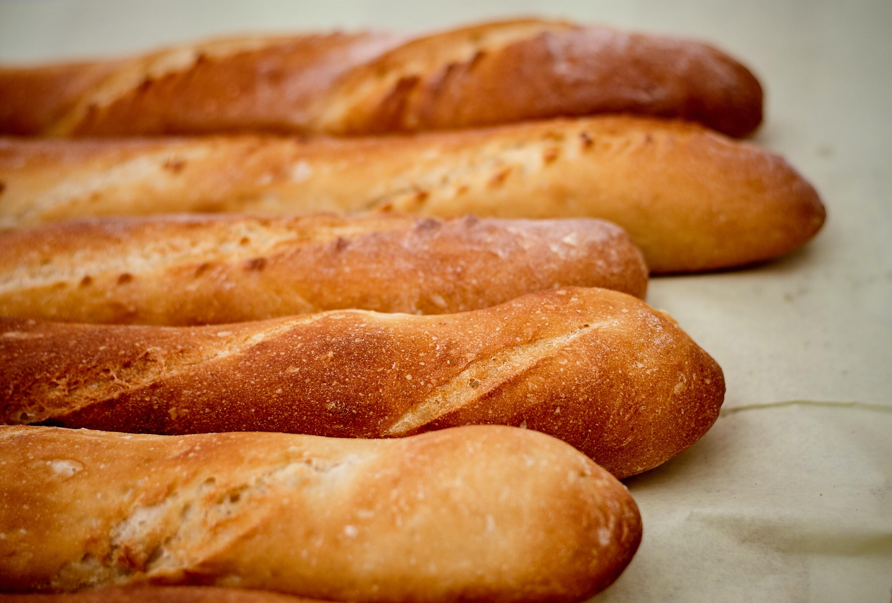

Baguette
A baguette is a long, thin loaf of French bread that is commonly made from basic lean dough. It is distinguishable by it's length and crisp crust.
Learn More
Challah
Challah is a special bread in Jewish cuisine, usually braided and typically eaten on ceremonial occasions such as Shabbat and major Jewish holidays.
Learn More
Sourdough
Sourdough bread is made by the fermentation of dough using naturally occurring lactobacilli and yeast. It uses biological leavening.
Learn More